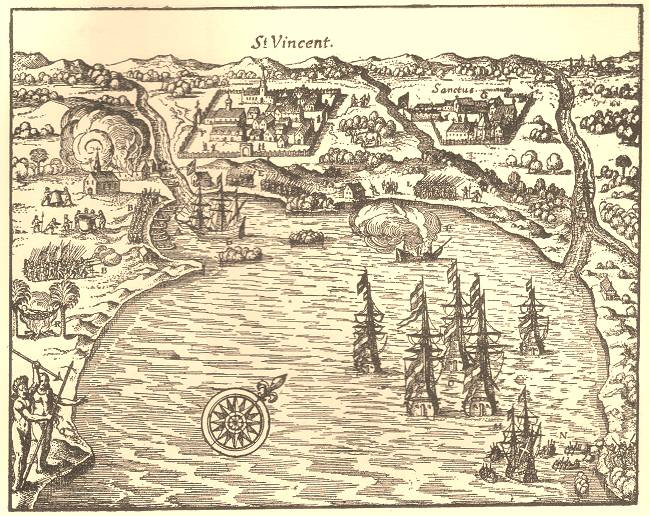
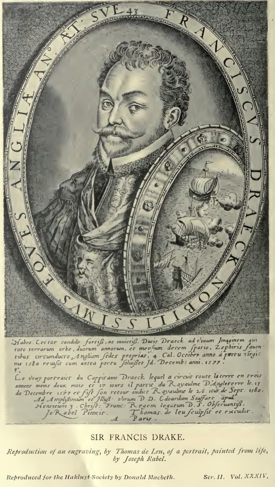
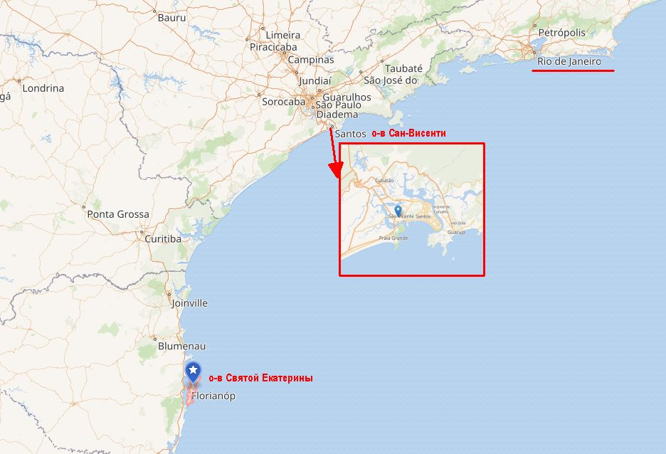

Кому суждено утонуть, того не повесят
Поглядел офицер:
«Что… не весело?
Ладно, Яков твой цел:
Не повесили».
И. П. Уткин. Свеча

Бухта Сан-Висенти. Гравюра начала семнадцатого века.
В прошлый раз мы рассказали о том, как чудом избежал позорной смерти капитан испанского галеона Сан Педро Франсиско де Куэльяр (Francisco de Cuéllar). Самое примечательное в этой истории, что это был уже второй суд над де Куэльяром на службе испанскому королю, которую он проходил в 1580-1603 гг. Первый состоялся во время его капитанства на флоте, созданном Филиппом II для действий в южной Атлантике и поэтому получившем название Armada de Magallanes – Флот Магелланова пролива, или просто Флот пролива. Прежде чем обратиться к судьбе де Куэльяра, естественным будет рассказать о Флоте Магелланова пролива более подробно.
Целью этого объединения военно-морских сил Испании, сформированного в Севилье, являлась защита интересов королевства в Новом свете от хищнических набегов английских и французских корсаров и контрабандистов. Экспедиция в составе 23 кораблей, имевшая на борту 3500 человек, в число которых, помимо экипажей, входили вновь назначенные чиновники местной администрации, солдаты и поселенцы с семьями, отправилась из Кадиса в декабре 1581 года. Перед Флотом пролива были поставлены три задачи: во-первых, обеспечить защиту Магелланова пролива и испанских поселений в Перу и Чили от набегов морских пиратов путем создания крепости у входа в пролив (в то время в Испании полагали, что Магелланов пролив это единственный проход между Атлантическим и Тихим океанами); во-вторых, доставить к месту назначения губернатора Чили и военный отряд численностью 600 человек для захвата южных чилийских территорий; в-третьих, соединение кораблей должно было обеспечить патрулирование акватории между Бразилией и Магеллановым проливом и перехват контрабанды. Командовать объединением был поставлен Диего Флорес де Вальдес, в дальнейшем одно из заметных действующих лиц Непобедимой армады, о котором мы уже неоднократно говорили.
С самого начала экспедицию преследовали неудачи. Кораблекрушения и болезни унесли жизни сотен человек. Тяжелые штормы повредили несколько кораблей до такой степени, что они оказались непригодными для дальнейшего плавания. В результате на поселение у пролива удалось высадить лишь 338 человек. Другая часть участников экспедиции смешалась с людьми английской экспедиции Эдварда Фентона и беглыми французскими контрабандистами на побережье южной Бразилии. Обратно в Испанию де Вальдес в июле 1584 года привел пять кораблей и около 600 человек. В сентябре того же года вернулись еще три корабля и 200 человек под командованием адмирала Диего де ла Ривера, второго человека в иерархии флота Магелланова пролива. Несмотря на то, что ход экспедиции освещен во множестве служебных бумаг, а также в записках ее главного писаря Педро де Рада, сведения о ней крайне противоречивы и отрывочны. Как и многие другие записи, связанные с Магеллановым проливом. Словно заклятие какое-то висит над этим местом. Как и над другими местами этого уголка Мирового океана: Огненная земля, мыс Горн, пролив Дрейка…
[О роли Дрейка в нашей истории надо сказать особо. О его кругосветном плавании написано много больше, чем о плавании Магеллана. Английские писатели постарались, а за ними и весь остальной мир.

Родился миф, суть которого – в строках певца Британской империи Киплинга:
…When Drake went down to the Horn
And England was crowned thereby…
...И Дрейк добрался до мыса Горн,
И Англия стала империей.
Р. Киплинг, The Song of the Dead ("Песнь мёртвых"). Перевод Н. Голя
Но не был Дрейк на мысе Горн. Как и не проходил проливом, названным его именем. Хотя Киплинг не единственный, кто приписывает ему эти подвиги. Поэтому попробуем разобраться с этим в отдельном рассказе, с появление которого постараемся не затягивать.
А сейчас вернемся к герою предыдущей нашей истории. ]
Сведения о капитанской деятельности Франциско де Куэльяра в составе Флота пролива появляются в декабре 1582 года, когда он получает под свое начало 400-тонный галеон Concepción, на борту которого было 100 испанских солдат.
Именно в это время разведка сообщила о появлении в водах южной Бразилии вооруженных английских кораблей, планировавших, как считали испанцы, повторить успех Дрейка и пройти Магеллановым проливом к испанским поселениям на тихоокеанском побережье. На их поиски был отправлен отряд из трех галеонов под командованием Андреса де Гино (Andrés de Guino, Andrés Eguino): сам де Гино на флагманском 400(500?)-тонном галеоне San Juan Bautista, де Куэльяр на галеоне Concepción и 250-тонный корабль Santa María de Begoña). Остальные корабли соединения направились на перехват англичан к Магелланову проливу. Де Гино получил приказ разведать южное побережье Бразилии от острова Святой Екатерины (Santa Catarina) до Рио-де-Жанейро и при обнаружении английских кораблей захватить или уничтожить их.

Участок побережья Бразилии между о. Св. Екатерины и Рио-де-Жанейро
В четверг 24 января 1583 года, в полдень испанский отряд прибыл в порт Сан-Висенти, где обнаружил на якоре два английских галеона и один пинас. Это были корабли отряда Эдварда Фентона (Edward Fenton): флагманский галеон Лестер (Galleon Leicester), 300-тонный галеон Edward Bonaventure и 50-тонный пинас Elizabeth.
Галеоны были вооружены тяжелой артиллерией, однако мачты и реи были спущены для ремонта, а бóльшая часть экипажей находилась на берегу. Появление испанцев застало их врасплох. Погода была идеальной, высокий прилив позволил кораблям де Гино без препятствий войти в бухту. К 11 часам лунной ночи де Гино был готов начать атаку. К этому времени англичане смогли вернуть экипажи на корабли, но к выходу в море приготовиться не успели. Поэтому Фентон приказал стать на якоря в бухте, при глубине 7 фатомов, сразу же за протяженной песчаной отмелью, которая не позволяла испанцам приблизиться к кораблям англичан для абордажа. Поэтому весь бой имел характер артиллерийской дуэли, которая продолжалась до 4 часов утра. Перестрелка была остановлена сильным шквалом с дождем. Итог был в пользу англичан: испанские корабли получили тяжелые повреждения, Santa María de Begoña затонула. В 10 часов утра де Гино попытался повторить атаку, но и на этот раз англичане ее отбили. Испанцы отошли в порт Сантус, в двух лигах вверх по руслу реки, где приступили к устранению повреждений.
Де Гино собрал военный совет, на котором провел разбор неудачных боевых действий в прошедшие сутки. Объективно картина выглядела следующим образом. Испанский отряд вошел в бухту Сан-Висенти кильватерной колонной. Во главе шел флагманский галеон San Juan, затем Concepción, замыкающей шла Begoña. Флагманский корабль попытался сблизиться с противником, однако этому помешала песчаная отмель между ними. Тогда San Juan бросил якорь и открыл огонь по противнику. Однако под действием течений и ветра корабль де Гино развернуло на якорном канате таким образом, что он перекрыл проход для следующих за ним испанских галеонов. Де Куэльяр попытался обойти флагмана, но не смог этого сделать и стал на якорь за флагманским галеоном, у правого его борта. Небольшая по размерам и более маневренная Begoña прошла вперед и вступила в бой с англичанами. Однако неспособная свободно перемещаться в ограниченном пространстве залива оказалась хорошей мишенью для английских артиллеристов, удачно уложивших несколько ядер в район ее ватерлинии; этого хватило, чтобы небольшой галеон затонул.
Когда рассвело, де Куэльяр попросил разрешения у флагмана взять на абордаж один из английских кораблей, больше всего пострадавший от огня испанцев. Однако де Гино запретил это делать и повел корабли в Сантус.
На военном совете Андрес де Гино, не желая брать ответственность за провальный исход операции, во всем обвинил де Куэльяра, который, в свою очередь, подверг резкой критике действия флагмана и отход отряда к Сантусу. Однако позиции де Куэльяра были слабы: он сам практически не принимал участия в ночном бою, опасаясь повредить своим огнем флагманский корабль. Де Гино тут же обвинил де Куэльяра в трусости и умышленной постановкой на якорь так, чтобы спрятаться за кораблем флагмана от вражеского огня. В итоге де Куэльяр был отстранен от командования галеоном и посажен под арест вместе со своим штурманом. Командование галеоном Concepción принял сумевший спастись капитан утонувшей Бегоньи.
По существующему на испанском флоте порядку спор между командирам двух кораблей подлежал рассмотрению старшим начальником, в нашем случае капитан-генералом Диего Флоресом де Вальдесом. Но он был далеко, в Магеллановом проливе. Поэтому следующей инстанцией, которая могла решить дело, был старший начальник порта, где находились корабли, губернатор Сан-Висенти Geronimó Leitón. К этой процедуре и прибег де Гино, имевшие хорошие отношения с губернатором. Де Куэльяру реально грозила смертная казнь за нарушение дисциплины. Однако он, дождавшись возвращения в Бразилию де Вальдеса, обратился к нему с обвинением своего флагмана в некомпетентности. Не имея желания решать этот конфликт, де Вальдес передал дело в Совет Индий в Мадриде. Ну а в Мадриде все решали связи обоих офицеров. Де Куэльяр, не надеясь переиграть де Гино в мадридских интригах, обратился в высший суд Севильи со своим видением дела. В Севилье, как водится, это дело замотали, а когда весь Флот пролива вернулся в Испанию, вовсе сняли с де Куэльяра все обвинения.